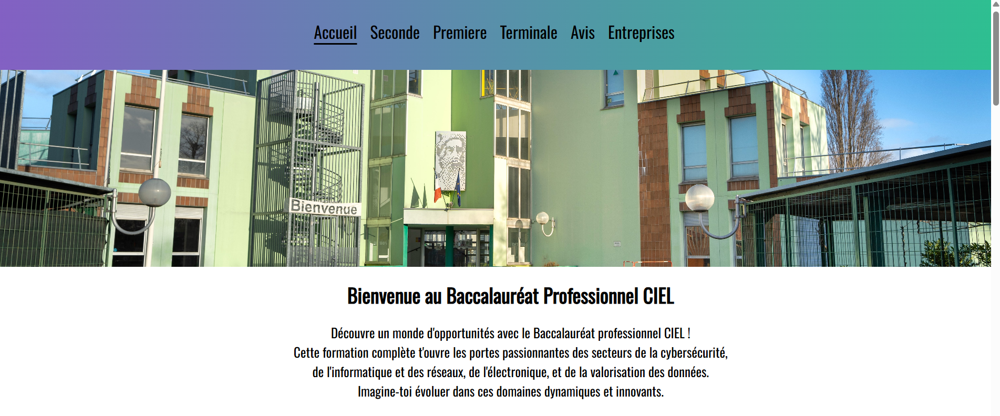
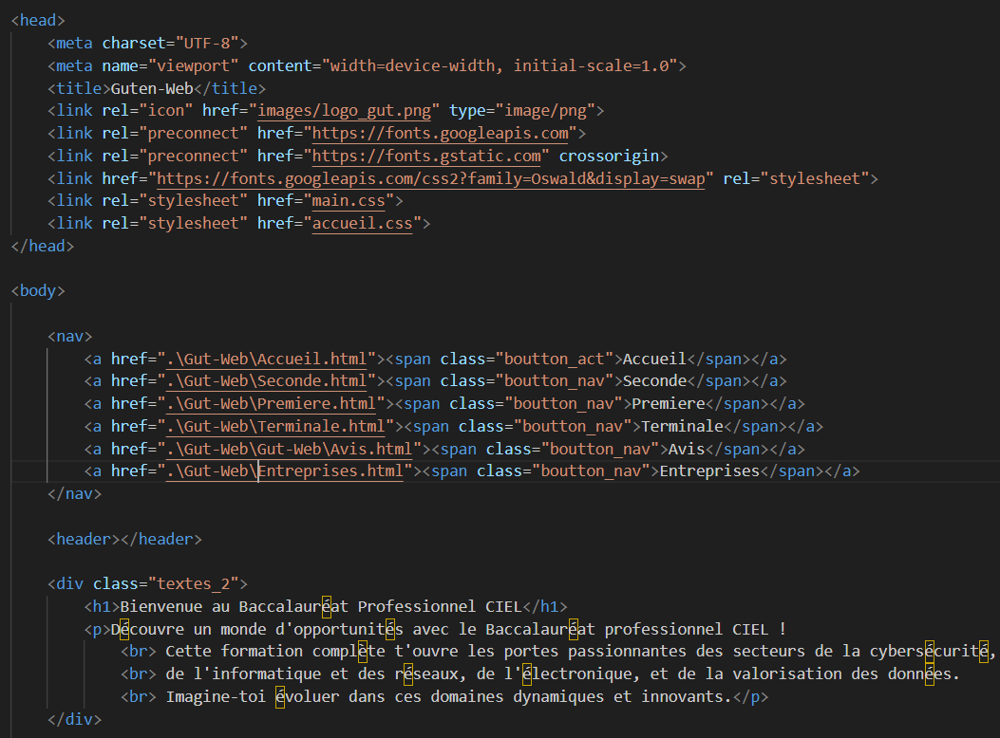

J'ai déjà réalisé plusieurs projets, notamment au lycée avec le "Chef d'œuvre",
qui consiste à faire un projet en informatique devant servir au lycée.
Yohann Gillig et moi nous nous
sommes associés pour créer un site web en HTML et CSS qui explique plus en détail la formation du bac pro,
avec les avis des élèves sur la formation et le lycée et une liste d'entreprises pour aider les futurs
élèves du lycée Gutenberg dans leur recherche de stages. Ce projet m'a donné beaucoup
d'expérience dans la programmation HTML et en CSS mais aussi dans l'organisation d'un projet.
